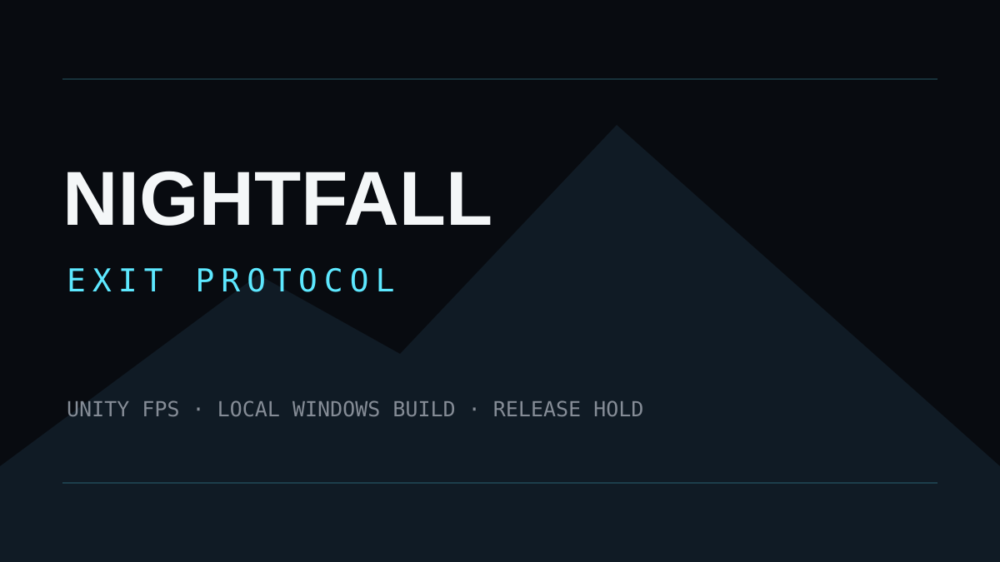

분대 전투
서로 구분되는 세 AI 동료와 사격·재장전·밀치기·소생 흐름을 구성했습니다.
LOCAL BUILD WINDOWS · UNITY 6
ROOK, VEX, MIRA와 야간 시설의 세 릴레이를 복구하고, 추출 비콘을 40초 동안 방어하는 싱글플레이 분대 FPS입니다.

100×140m보다 큰 3개 높이의 절차 시설에서 릴레이를 순서대로 되살리고, 위협을 밀어내며 옥상 추출 지점까지 이동합니다.
서로 구분되는 세 AI 동료와 사격·재장전·밀치기·소생 흐름을 구성했습니다.
진입로, 아트리움, 측면 루프, 메자닌, 연구실 캣워크와 추출 접근로를 연결합니다.
Unity EditMode/PlayMode와 선택형 스모크·그래픽 캡처 경로를 운용합니다.
프로젝트 소유 게임 로직과 제3자 시각 에셋을 분리하고, 권리 검증 전 공개를 보류합니다.